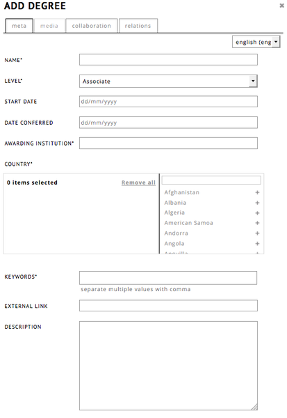

I think my biggest issue must be that as long as text flow cannot be controlled, it will be difficult to position anything using such a language. So imagine that I want a picture next to a line inside a paragraph of text e.g. top of image top of line of text. This could even be done by inserting anchors into the text, but the system would need to be able to read out the exact position of the anchor after the text has been rendered and position the image accordingly.
Positioning relative to tool borders has never been a problem; position relative to content of the tools always was. As long as we cannot solve this problem, we will not really be able to address what's currently not working - still, it's good progress; your approach sounds sensible to me. The only other thing I would add is perhaps the ability to use this syntax in such a way as to be context relative. For example, as we have it now in the layers, all objects could have an order.
If an author allows fosr context responsiveness, if I read something on my phone, the exposition could simple be linearised. (this may have some implications for hyperlinking etc.) I would think that about half of the expositions would be able to use this, while the other half would perhaps need to be given help in assessing how their page will look on various devices, just in order to help them make some crucial decisions as to page width, for example.